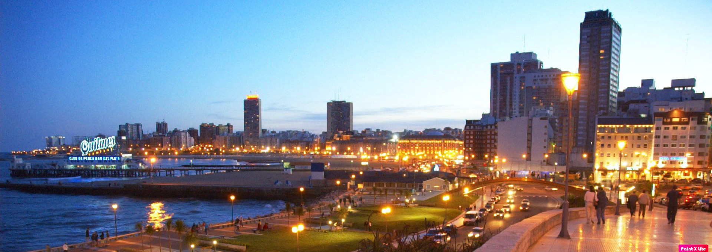

Mar del Plata

Mar del Plata


Mar del Plata es una ciudad ubicada en el sudeste de la provincia de Buenos Aires, Argentina, sobre la costa
del mar argentino. Es la cabecera del partido de General Pueyrredón, un importante puerto y balneario y el
segundo destino turístico del país después de Buenos Aires. En época de verano su población puede aumentar
en alrededor de un 301 %, por lo que cuenta con una gran oferta de infraestructura de hoteles y otros
servicios. La autovía 2 la enlaza tras 404 km con Buenos Aires y está ubicada a 368 km de La Plata.
Las principales industrias son la pesquera, la turística y la textil. La pesca, actividad principal del
puerto, se complementa también con barcos petroleros y cerealeros. La ciudad cuenta también con una base
naval de submarinos. Entre la gran variedad de industrias, se destacan también las derivadas de la
horticultura, la construcción, la metalúrgica y la mecánica.

El Partido de General Pueyrredon, cuya ciudad cabecera es Mar del Plata, se encuentra situado sobre el Océano Atlántico, en la zona sudeste de la provincia de Buenos Aires.
En Ferrocarril:
En tren se llega a la Estación Terminal Ferroautomotora María Eva Duarte de Perón. El viaje desde la Estación
Constitución tiene una duración de 6 horas aproximadamente
En Micros de larga distancia:
Los ómnibus de larga distancia llegan a la Estación Terminal Ferroautomotora María Eva Duarte de Perón. El
viaje desde la Estación Terminal de Retiro tiene una duración de 5 horas aproximadamente.
En Avión:
Por vía aérea se arriba al Aeropuerto Internacional Ástor Piazzolla. El vuelo desde la Ciudad Autónoma de
Buenos Aires tiene una duración de 45 minutos.
En automóvil:
La Autovía 2 conecta La Ciudad Autónoma de Buenos Aires con Mar del Plata en cinco horas, aproximadamente.
Las rutas 11, 88 y 226 también vinculan Mar del Plata con Buenos Aires y el resto del país.

El sector hotelero representa uno de los componentes de mayor importancia en el concierto del equipamiento
turístico marplatense y ofrece servicios que en calidad y variedad marchan acordes con los principales
centros urbanos y vacacionales del país.
En Mar del Plata todos encuentran su lugar. La oferta comprende todas las modalidades de alojamiento y dentro
de cada una de ellas, la accesibilidad para todo presupuesto.
Se puede optar, entre otras opciones, por hotelería de 1 a 5 estrellas, apart hoteles, clubes de playa,
cabañas, hosterías y establecimientos rurales.

El Sistema Único de Boleto Electrónico, más conocido como SUBE, es el sistema implementado en Mar del Plata,
que permite a cada usuario con su respectiva tarjeta, abonar los viajes en todas las líneas de colectivos,
tanto urbanas como interurbanas, excepto la 221, que se paga en efectivo.
Numerosas empresas de taxis y remises ofrecen sus servicios que tienden a brindar la mayor calidad de
atención y servicio al cliente.
A las clásicas caminatas por diferentes lugares de la ciudad se suma la posibilidad de recorrerlos en
bicicleta. Diferentes empresas ofrecen el servicio de alquiler de bicicletas y accesorios como candados,
cascos, etc.
Diferentes agencias de alquiler de autos se suman a la oferta de medios de transporte de la ciudad.

Mar del Plata se encuentra trabajando para promover más y mejores servicios accesibles para todas las
personas.
En diversas paginas se puede encontrar las guías que incluye información necesaria para que los usuarios con
comunicación o movilidad reducida puedan consultar al visitar nuestro destino.